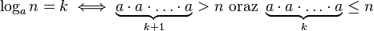

Logarytm
W poprzedniej lekcji, w podsumowaniu przy omawianiu klas złożoności wspomnieliśmy
o logarytmicznej klasie złożoności. W tej lekcji poznamy czym jest funkcja logarytm,
a także postaramy się zaimplementować program, który oblicza wartość tej funkcji.
Jednak najpierw musimy zapoznać się z definicją logarytmu. Funkcja logarytm
przyjmuje dwa argumenty: a oraz n. Parametr a to podstawa
logarytmu i jest to liczba naturalna większa lub równa dwa (a ≥ 2).
Natomiast parametr n to dodatnia liczba naturalna (n ≥ 1).
Logarytm z liczby n o podstawie a, definiujemy następująco:
logan = k, gdzie k to najmniejsza liczba,
taka że liczba a pomnożona przez siebie k+1 razy daje wynik większy niż n.
Inaczej mówiąc:

Dodatkowo przyjmuje się, że logarytm z liczby n, która jest mniejsza niż a,
wynosi zero (logan = 0, dla n<a).
W rzeczywistości, w matematyce funkcja logarytm jest definiowana trochę inaczej.
Logarytm może przyjmować dodatnie liczby rzeczywiste i zwraca również liczbę rzeczywistą.
Jednak dla uproszczenia podaliśmy inną, nieco prostszą definicję logarytmu.
Podana wyżej funkcja logarytm jest tak na prawdę zaokrągleniem w dół wartości
zwracanej przez funkcję logarytm definiowaną w matematyce.
Podana wyżej definicja logarytmu ma jeszcze jedną ważną cechę.
Jeśli podstawą logarytmu będzie dziesięć (a = 10), to funkcja zwróci liczbę,
która po dodaniu jedynki, będzie odpowiadać ilości cyfr liczby n (zapisanej w układzie dziesiętnym).
Zadaniem w tej lekcji jest zaimplementowanie funkcji „int logarytm(a, n)”,
która będzie liczyć zdefiniowaną wyżej funkcję. Zastanówmy się jak może wyglądać program,
który implementuje tę funkcję. W pierwszym kroku należy podstawić do zmiennej log zero,
a do zmiennej iloczyn jeden. Następnie w kroku drugim należy wykonywać pętlę
dopóki zmienna iloczyn będzie mniejsza lub równa parametrowi n.
W każdej iteracji pętli należy zwiększyć o jeden zmienną log, a zmienną iloczyn
pomnożyć przez liczbę a. Po zakończeniu wykonywania się pętli należy zwrócić
wartość zmiennej log pomniejszony o jeden i zakończyć działanie funkcji.
Twoim zadaniem jest zaimplementowanie funkcji
„int logarytm(a, n)”.
Funkcja powinna realizować algorytm opisany w powyższym akapicie.
W przypadku pojawienia się problemów z implementacją tej funkcji, możesz wyświetlić
wskazówkę w postaci pseudokodu. Po zakończeniu implementowania tej funkcji powinienś
porównać swoje roziązanie z rozwiązaniem wzorcowym, a następnie przejść
do drugiej części obecnej lekcji.